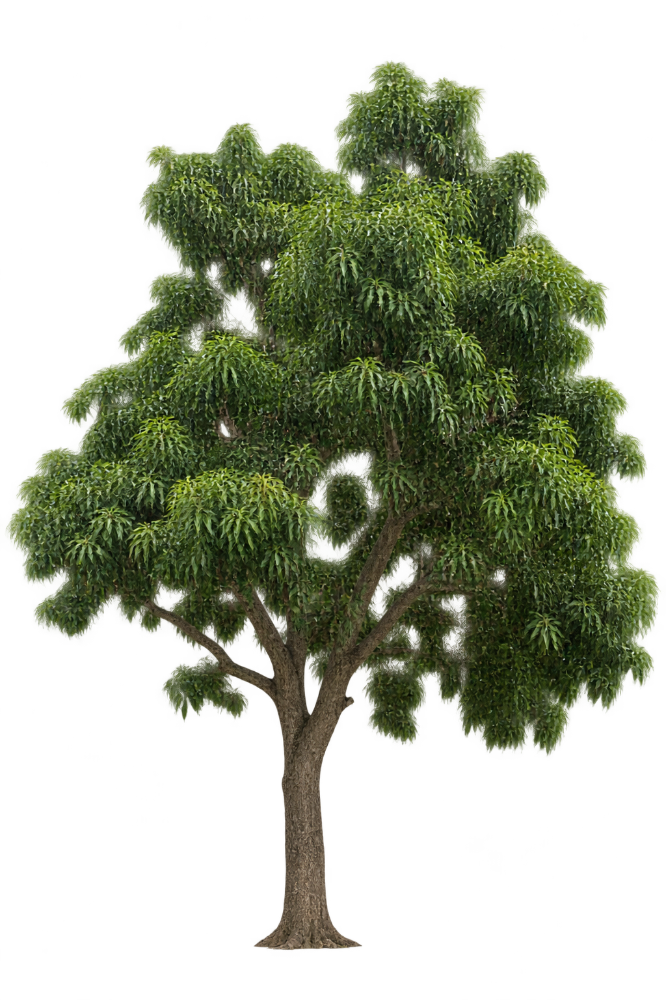

Spend gate DENIED. CONTROL is the existing Batch-2 PNG. A and B are prepared, not generated. Native detail is the primary gate. In-Garden is secondary.
runId design-asset-woody-foliage-detail-ab-1. Production factory prompt unchanged. Quality globally remains medium. No Batch-2 approval carry-forward.
CONTROL — old prompt / medium
design-cutout-visual-state-family-v1 · quality=medium · ASSET_DETAIL_SOFT

filter:none. No blend.
CONTROL locked: DETAIL_SOFT / ASSET_DETAIL_SOFT. Do not regenerate.
A — detail prompt V2 / medium
experimental V2 · quality=medium · not generated
B — detail prompt V2 / high
same V2 prompt as A · quality=high · not generated
Production Tree Physical Scale V1 · Mango LOW. Blend V2 garden-only. Do not judge native leaf detail here.
CONTROL
Production Tree Physical Scale V1 · Mango LOW · secondary to native detail
A
Production Tree Physical Scale V1 · Mango LOW · secondary to native detail
B
Production Tree Physical Scale V1 · Mango LOW · secondary to native detail